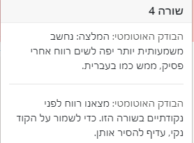

זה אומר שלא נבדוק את התרגיל. כל שאר ההנחיות נשארות בעינן
לייק 1
עד עכשיו(עד שבוע 4 כולל) אם בחלק מהתרגילים לא תיקנתי את הבודק האוטומטי זה אומר שעדיין יבדק? ,
כי זה רק משבוע 5 שחובה לתקן את הבודק האוטומטי .
היי ים,
בשורת הקוד הבאה -
players = {“player 1”:0, “player 2”:0, “player 3”:0, “player 4”:0}
אני מקבלת הערה -
הבודק האוטומטי: המלצה: נחשב משמעותית יותר יפה לשים רווח אחרי פסיק, ממש כמו בעברית.
לא כל כך ברור לי למה, אשמח להבהרה 
הכוונה היא לרווח אחרי נקודתיים, זו בעיה מוכרת 
3 לייקים
זו הערה שנכתבת גם אם אין רווח אחרי הנקודתיים
לייק 1
צריך לשים רווח אחרי נקודותיים???
לייק 1
מנומס יותר
2 לייקים
הגדרתי משתנה בתוך לולאה, כאשר ה-if הראשון בה מבחינת סדר הכתיבה הוא בוודאות לא ה-if הראשון שרץ. הבודק האוטומטי חושב שמדובר במשתנה שלא הוגדר כלל ולכן רושם הערה (הוא פשוט מוגדר מאוחר יותר).
מה לעשות במצב כזה?
(סדר הכתיבה משמעותי פה).
להגדיר את המשתנה בחוץ עם ערך סתמי כלשהו שיידרס בהמשך
האם זה נחשב מנומס יותר ככה או שאעשה את זה בשביל הבודק האוטומטי?
לא יודעת אם יש כלל נימוס כזה, אבל זה מיועד גם לנוחות מי שיקרא את הקוד ולא יבין מאיפה המשתנה הזה צץ ולמה הוא נתקל במשתנה שנוצר רק אח"כ
לייק 1
כמו כן אם אפשר לשאול, מאיזה שבוע זה תקף?
כלומר איזה שבוע אתם כבר בטוח לא תבדקו?
(כי זו קצת עבודת נמלים ^^ ואין לי ממש דרך להעריך כי לא נבדקו תרגילים משבוע 2)
“…קיבלתי החלטה שהחל משבוע 5…”  ?
?
נכון, אנחנו בשבוע 5 עכשיו, אבל הם לא בודקים תרגילים של שבועות שעברו כבר?
יש פה כפל משמעות
תרגילים שיוגשו משבוע 5. את תרגילי שבוע 4 אנחנו בודקים בכ"מ
לייק 1
שאלה על הערה שיש לי באחד התרגילים:
זו השורה:
{kind=link}
זו הערה:

אני די בטוח שאין שם נקודותיים, מה גם שיש רווח אחרי הפסיקים…
אשמח שתעזרו לי להבין את הבעיה.
הפסיק בין 9 ל-10
5 לייקים
{kind=link}
היי אני מקבלת שגיאה מהבודק אוטומטי שלא השתמשתי במשתנה , אבל השתמשתי רק באחד מהם.
עכשיו אני צריכה אותו בפונקציה שלי .
לא בטוחה איך לתקן כדי שהבודק האוטומטי לא יזהה את זה כשגיאה
אם יש משתנה בלולאה שאת לא צריכה את יכולה להחליף אותו ב-_
2 לייקים
וואי מגניב עבד תודה !
לייק 1